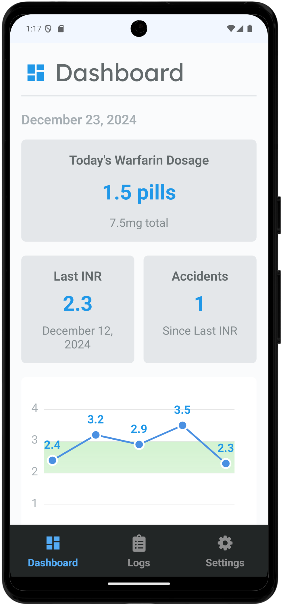

Warfarin Tracking Made Simple
Record your INR, drug dosages, and more with our platform tailored specifically for Warfarin users. Take the hassle out of tracking and start focusing on your health today.

Features

Easy Tracking
Log your INR levels and dosages with just a few taps.

Notifications
Get reminders to take your medication on time.

Offline First
No internet? No problem. Your data stays with you.
Download Now
Available for Android and iOS.